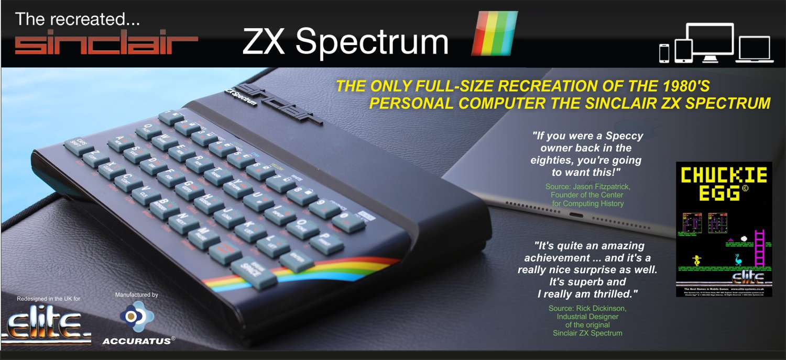

<
Se trata de uno de los ordenadores de 8 bits más populares de los años 80
(sobretodo en Europa). Su diseño se optimizó mucho, exprimiendo sus escasos
recursos (respecto a la competencia). Era una máquina asequible que acercó
la microinformática a muchos hogares. Tuvo juegos tan famosos como R-Type
y Renegade.
>
